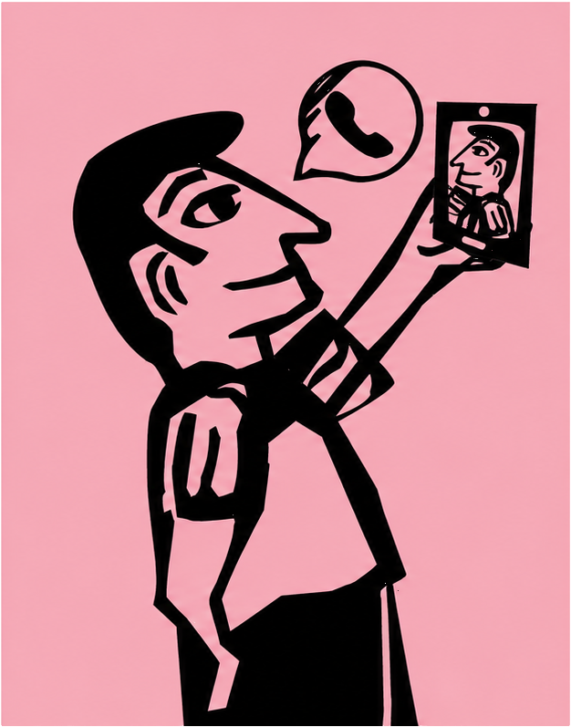

Estou ficando cansado
Da tal tecnologia
Só se fala por e-mail
Mensagem curta e fria
Twitter e Facebook
Antes que eu caduque
Vou dizer tudo em poesia.
Não é mais como era antes
É tudo abreviado
"Você" só tem duas letras
O "O" e o "E" foi riscado
Para declarar o amor
Basta botar uma flor
E um coração desenhado.
Arroba agora não pesa
É parte de um endereço
Ponto final nem se usa
Ou vai até no começo
Agora é .com
Se o saite é muito bom
Ele vale um alto preço.
Pra piorar a liguagem
O emoticom é um risco
Tem símbolo para tudo
Ponto e vírgula e um asterisco
um beijo significa
Pra entender como fica
Decifre esse rabisco.

Tenho saudade das cartas
Escritas com a própria mão
Mandava no mês de Junho
Só chegava no Verão
Mas matava a saudade
Era texto de verdade
Nas linhas do coração.
Agora, escrevo e envio
Chegando na mesma hora
Mas quando vou prosear
A pessoa foi embora
Abriu outro aplicativo
O mundo ficou cativo
Da tecnologia do agora.
Felizmente, pra orar
Não precisa de internet
Deus escuta todo mundo
Se quiser, faça esse teste
Dois pontos são dois joelhos
Seus lábios são aparelhos
Deixe que Deus interprete.